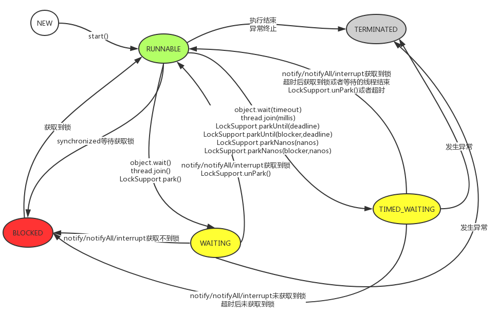

Java线程状态
线程状态

Java语言定义了5中线程状态，在任意一个时间点，一个线程只能有且只有其中的一种状态。
新建（New）：创建后尚未启动的线程处于这种状态
运行（Runable）：包含了操作系统线程状态中的Running和Ready，也就是处于此状态的线程有可能正在运行，也有可能等待着CPU为它分配执行时间。
无限期等待状态（Waiting）：处于此状态的线程不会被分配CPU执行时间，它们要等待其它线程显式地唤醒。以下方法会让线程陷入无限等待状态：
- 没有设置Timeout参数的Object.wait()：即，wait(0)
- 没有设置Timeout参数的Thread.join()：本质也是通过wait实现，wait(0)
- LockSupport.park()：调用的是
UNSAFE.park，jvm内部实现，通过设置一个状态位实现
有限期等待状态（Timed Waiting）：处于此状态的线程也不会被分配CPU执行时间，但它可以被其它线程显式地唤醒，也可以在超时后由系统自动唤醒。以下方法会让线程进入到有限期等待状态：
- Thread.sleep()
- 设置了Timeout参数的Object.wait(timeout)
- 设置了Timeout参数的Thread.join(timeout)：本质也是通过wait实现
- LockSupport.parkUntil(deadline)
阻塞（Blocked）：线程被阻塞了，“线程阻塞”与“等待状态”的区别是：“阻塞状态”是等待着获取一个排他锁，这个事件将
在另一个线程放弃这个锁的时候发生；而“等待状态”则是在等待一段时间或者唤醒动作的时候发生。
结束（Terminated）：已终止线程的线程状态，线程已结束执行。
注意：
1、wait()必须要通过notify去唤醒，如果没有对应的notify将会一直等待下去，尽管已经没有现在占用锁了。
2、wiat被notify或者超时后，如果能获取到锁进入到RUNNABLE状态，如果不能获取到锁进入到BLOCKED状态
实际应用
1、通过jstack dump出当前的线程，了解当前线程的状态
- 如果里面有大量的线程状态是BLOCKED，那么需要关注
- 如果最后有DEADLOCK，就说明出现了死锁，需要进一步分析哪两个线程造成了死锁
2、分析cpu占用高
# top -Hp 24045 //列出进程对应的线程，找出占用CPU高的线程
Tasks: 61 total, 1 running, 60 sleeping, 0 stopped, 0 zombie
Cpu(s): 43.7%us, 5.3%sy, 0.0%ni, 48.5%id, 0.0%wa, 0.0%hi, 2.6%si, 0.0%st
Mem: 3924884k total, 3744412k used, 180472k free, 5724k buffers
Swap: 4063224k total, 867456k used, 3195768k free, 177824k cached
PID USER PR NI VIRT RES SHR S %CPU %MEM TIME+ COMMAND
24074 test 20 0 3784m 1.6g 18m S 34.2 43.6 5:12.52 java
24075 test 20 0 3784m 1.6g 18m R 30.6 43.6 6:49.42 java
24078 test 20 0 3784m 1.6g 18m S 24.6 43.6 10:16.63 java
24076 test 20 0 3784m 1.6g 18m S 6.6 43.6 16:01.65 java
比如现在24074CPU占用高
# jstack 24045 > aaaa.out //dump当前的线程状态，
24074转换成16进制为5E0A，找到5e0a线程，就可以分析这个线程具体在干什么。